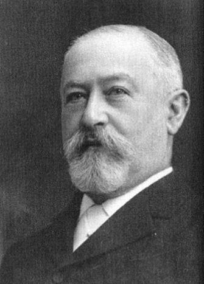
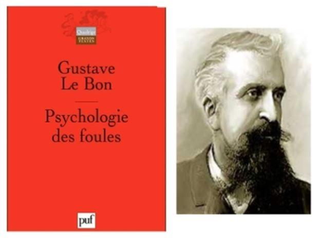

Macron le 24 août 2017, déclare depuis la Bulgarie que la Pologne « trahit les intérêts européens » (sans préciser lesquels !), ajoutant que l’Union « s’est bâtie sur des valeurs »… Lesquelles précisément, où trouve-t-on le catalogue de ces valeurs ? Sur quoi sont-elles fondées et en quoi sont-elles légitimes ? De la même façon la Hongrie de Viktor Orban est vouée aux gémonies et ne serait plus un État de droit pour avoir refusé de se plier aux oukases de Bruxelles. Les Hongrois doivent en conséquence être sanctionné et mis au ban de l’Union pour en avoir trahi les Valeurs fondatrices ! La Hongrie s’est vue lâchée par le Parti populaire européen (PPE) dont elle est membre, par les Républicains français et aussi, assez curieusement, par le chancelier autrichien Sebastian Kurz appartenant pourtant à cette droite extrême si ordinairement vilipendée. Tous et bien d’autres se seraient ainsi ralliés à la mise en œuvre punitive de l’Article 7. Le Parlement européen, ce 12 septembre 2018, après avoir dénoncé la « menace systémique » que ferait peser la Hongrie sur les valeurs de l'Union soviétique européenne, il revenait aux représentants du peuple européen de réagir en lançant cette procédure, finalement adoptée par 448 contre 197 et 48 abstentions. Les Polonais du parti Droit et Justice se retrouvèrent quant à eux parmi les maigres soutiens des Hongrois, Varsovie étant depuis décembre 2017 également sous le coup d'une même procédure.
L’eurodéputée écologiste Judith Sargentini, félicitée par ses collègues, est l’auteure du rapport parlementaire sur la situation de l’État de droit en Hongrie. Vincent Kessler/Reuters
DES VALEURS EN QUESTION
Question : depuis quand les valeurs des « valeurs » sont-elles des normes juridiques contraignantes, alors que, par exemple, la Déclaration universelle des Droits de l’homme est réputée – à juste titre – n’être que purement déclaratoire ? Et lorsque l’on parle de « valeurs » il est implicitement fait référence à une morale supérieure, quasi transcendante (mais laquelle ? le culte de l’homme divinisé ?), qui justifierait tout et devant laquelle tout devrait s’effacer ou plier. À commencer, dira le St Père, par les « intérêts » des nations cibles de la submersion migratoire.
À ce stade l’information n’existe plus, elle a laissé place à une propagande éhontée, arme létale contre la pensée et l’intégrité mentale de ceux qu’elle vise. Ainsi l’insupportable matraquage quotidien relatif aux pauvres migrants (on n’ose plus parler de réfugiés, la ficelle malgré sa grosseur a fini par s’user) comme si envahir un pays le portable à la main était un « droit » aussi fondamental que celui d’avorter dans la joie !
Comme si ces valeurs (équivoques et non définies) étaient des principes irréfragables, et en quoi la disparition de frontières serait-elle une valeur fondatrice de l’Union européenne formalisée dans ou par quel traité ? N’aurions-nous pas été prévenus ? Avons-nous mal lu les indigestes accords de Maëstricht et de Lisbonne ? Au demeurant nos gentils migrants (ou envahisseurs, c’est selon) rescapés des flots amers, sont recueillis loin des côtes par des navires spécialement affrétés pour cette mission par des ONG. Associations sergents recruteurs d’un nouveau genre, qui vont jusque dans les villages africains pour y solliciter des candidatures à l’exil doré dans la douce Europe… Avec un risque de naufrage moindre puisque les Aquarius et consorts veillent au grain et croisent en mer sur des routes maritimes bien balisées par les passeurs.
Ces organisations dites non gouvernementales sont, à y regarder d’un peu plus près, financées sur fonds publics nationaux et européens… De la pure philanthropie façon Georges Soros, exécutant de haut vol des desseins globalistes de la Maison à l’écu rouge, grand promoteur de révolutions colorés et fervent adepte du regime change… Ou encore, brillant émule de Jacob Schiff, américain issu de germain, autre immense philanthrope… bienfaiteur de l’humanité, financeur du Japon dans la guerre de 1904 contre l’empire russe, de Trosky et de ses sbires newyorkais protagonistes de la Révolution d’Octobre 1917 !
CONSPIRATION ET PARANOÏA
Émettons l’hypothèse aussi conspirationniste que paranoïaque – honni soit qui mal y pense - que Macron n’ait été choisi, nommé et coopté (mais non pas élu au sens primitif) que pour devenir le Merkel français afin d’accomplir au pas de charge le Plan de mutation sociétale, (l’adaptation de l’Hexagonie aux normes du mondialisme politique) et dans ce but, accélérer le changement de population. Un Grand remplacement nécessaire à casser la matrice ethnohistorique, ethno-confessionnelle et culturelle, gréco-latine et chrétienne ayant engendré la civilisation occidentale.
Cette phase IV du grand projet mondialiste consiste à détruire les nations et en finir avec l’État nation… le verrou qu’il convient de faire sauter ainsi que le confessait Edmond de Rothschild dans le numéro 775 du 18 juillet 1970 de « L’Entreprise », la future revue l’Expansion. De la sorte que, dans une remarquable continuité d’esprit et d’action, M. Macron a pour sa part été nommé - ce n’est pas une supposition mais une affirmation – avec l’objectif prioritaire de réaliser en France ce qu’a si bien accompli frau Merkel en Allemagne… 8 millions d’immigrés depuis 2011 ayant franchi les frontières de l’Allemagne réunifiée et pas seulement 1 million en 2015 comme le susurrent les médias. Des masses humaines qui inéluctablement vont essaimer à travers le sous-continent.
ÉLÉMENTS DE PREUVE
M. Macron devient le 26 août 2014, ministre de l'Économie dans le gouvernement Valls II. Deux ans plus tard, le 30 août 2016, il démissionne de ce poste pour se consacrer à son mouvement politique En marche qu’il a créé à Amiens le 6 avril précédent. Le 8 mars 2016 le Journal officiel publie une loi - N°2016-274 - dont la caractéristique est d’être fortement incitative à l’immigration sauvage… Que la presse persistait encore à cette date à présenter - contre toute vraisemblance - comme exclusivement composée de victimes fuyant les désastres de la guerre… en particulier des Syriens tentant d’échapper à la barbarie d’Assad le boucher.
Une dénomination qui a fait long feu : on parle maintenant à tout va de « migrants » parce que les mensonges à ce sujet doivent encore être badigeonnés d’une pellicule de recevabilité. Au reste, en tant que détenteur du portefeuille de l’Économie, M. Macron ne pouvait ignorer l’existence et la teneur d’un texte dont la rédaction (soumise à une omerta sans faille, le Front national ne faisant pas exception) avait coïncidé avec son arrivée à Bercy… Lors du vote final de cette loi à l'Assemblée nationale, l'hémicycle était quasiment vide : un seul député de l'opposition [un Républicain] pour une dizaine de socialistes, tandis que les deux députés d'extrême droite brillaient par leur absence… Ceci en dit long sur la nature du système !
Insistons sur l’idée que le fantoche Macron n’a été propulsé au sommet que pour exécuter en France l’un des volets d’un authentique ethnocide visant à terme l’ensemble du monde blanc… les May, les Merkel, le Canadien Justin Trudeau, nouvel ami du sieur Macron, accomplissant chacun leur part du travail dans leurs pays respectifs.
Comprenons que les stratèges de la gouvernance mondiale en progestation, sont les Machiavéliens que décrivait en 1949 James Burnham, ancien compagnon de route de Léon Trotsky (et néoconservateur avant la lettre). Des gens qui sont des prévisionnistes hors pair et des adeptes de la planification tout en s’inspirant des travaux de Gustave Le Bon sur la psychologie sociale appliquée à la manipulation des masses.
Parmi les pionniers dans le développement moderne de cet art de la guerre, mentionnons le soviéto-français Serge Tchakhotine avec « Le Viol de foules par la propagande » 1939, et le neveu de Freud, Edward Bernays « Propaganda » 1928. Le monde étant petit, le commissaire européen Pierre Moscovici est né d’un père psychanalyste dont la carrière doit beaucoup à l’exploitation de l’œuvre de Gustave Le Bon. Ces gens ayant sur l’indigénat européen N coups d’avance, nous sommes perpétuellement condamnés à nous échiner - en vain - à démêler les fils du réel… Reste que nous flottons dans éther ne pouvant jamais atteindre le plancher des vaches - même s’il nous saute au visage et aux yeux - parce que nos regards sont en permanence brouillé par des considérations sidérantes et incapacitantes : le terrorisme intellectuel des droits de l’homme, le lourd héritage d’une charité chrétienne à présent largement dévoyée et même – last but not least - la Shoah désormais mobilisée et mise à contribution à la suite du Vatican pour mieux nous culpabiliser et nous tétaniser en faveur de l’accueil ad libitum !
Nous broyons le vide pour essayer de comprendre les événements qui nous affectent, tout en refusant de tirer les conclusions des faits qui pourtant devraient nous sauter aux yeux et s’imposer à tous.
EST-IL UN INSTANT ENVISAGEABLE DE METTRE EN ÉQUATION « INTÉRÊTS » VITAUX ET « VALEURS » ?
À entendre saint Macron nous assener que : La Pologne « décide d’aller à l’encontre des intérêts européens sur de nombreux sujets… [or] l’Europe s’est construite pour créer de la convergence… elle s’est construite sur des libertés publiques qu’enfreint aujourd’hui Varsovie [lire en ce mois de septembre 2018, Budapest]… Ce détachement à l’égard d’une Europe qui n’ose plus avoir de l’ambition donne place à ceux qui foulent au pied les valeurs européennes ». Nous devrons comprendre qu’effectivement la Pologne et la Hongrie défendent des intérêts nationaux qui ne coïncident pas ou plus avec ceux de l’Europe soviétisée… Cette Europe si pétrie de Valeurs libérales !
Parce que c’est bien là que le bât blesse : M. Orban serait un démocrate illibéral ! Valeurs ne n’oublions pas qui supposent a priori la disparition des nations et des peuples qui la composent. Qui ne voit que la bureaucratie bruxelloise (vampirique et parasitaire), ne représente qu’elle-même et les intérêts messianiques ou les appétits de puissance d’une poignée d’oligarques membres de l’État profond internationaliste, mais surtout en aucun cas les intérêts primordiaux de sécurité et de prospérité des pays réels vivant sur le Vieux continent… Lesquels se trouvent de plus en plus étroitement soumis au terrorisme de la « correction politique », à la pression lancinantes des administrations fiscales et à la dictature hygiéniste.
DU MÉPRIS À TOUS LES ÉTAGES
De ce point de vue les intérêts concrets, matériels et moraux des peuples européens ne comptent pas ou n’existent pas face aux intérêts éthiquement supérieurs guidant les bureaucraties européistes… celles-ci n’existant que pour réaliser la République universelle et accomplir un fumeux idéal de paix dans, et par, la fusion magmatique des nations et subséquemment, afin de parvenir à l’assomption eschatologique de l’humanité souffrante. Des chimères qui se nourrissent du sang et de l’âme des hommes. Ce pourquoi, gageons que bientôt le système en perte de vitesse, après avoir livré sans répit une guerre médiatique et juridique de tous les instants à la dissidence intellectuelle et politique (en condamnant depuis des lustres à la mort sociale - quand ils ne sont pas durement frappés par des lois scélérates - les déviants et autres esprits rétifs à la zombification de masse), devrait très vite durcir sa répression contre les récalcitrants à l’invasion et au suicide collectif…
Soit tous ceux qui s’opposent aux dérives totalitaires du politburo bruxellois (le directoire non élu de l’Union dite européenne, l’Eurasia orwellienne) et ses vingt-huit Commissaires politiques. Le discours du sieur Macron prononcé à la Villette le 1er mai 2017 était sur ce point assez explicite : « Ils sont là, ce sont eux nos vrais ennemis, puissants, organisés, habiles, déterminés. Vous les croisez dans les rues, dans les campagnes, sur la Toile, bien souvent masqués, aussi haineux que lâches. Vous les connaissez. Le parti des agents du désastre, les instruments du pire : l’extrême droite française ». La France profonde en quelque sorte.
Et à Paris, le 29 juin 2017, lors de l'inauguration de la Station F, laquelle rassemblait un millier de start-up, il vise cette fois la France d’en-bas : « Une gare, c'est un lieu où on croise des gens qui réussissent et des gens qui ne sont rien ». Un aveu d’indicible mépris pour la plèbe, dédain qui ne doit rien à la maladresse. D’abord parce ces petites phrases assassines à répétition sont très vraisemblablement des éléments de communication concoctés par les spin doctors (communicants de choc) élyséens et délivrés avec une délectation sensible. De la même façon la plupart des bourdes de son prédécesseur n’en étaient pas, mais formaient de sournoises réjections soigneusement calculées et pesées.
Saluons au final la grande cohérence et la réelle continuité du discours macronien qui se réduit à quelques éléments de langage, toujours les mêmes et invariablement insultant que roitelet Macron ressasse inlassablement, de préférence depuis l’étranger, son lieu de prédilection pour cracher dans la soupe hexagonale … On se souviendra de sa dénonciation des « crimes contre l’humanité » liés à la colonisation dénoncés à Alger le 14 février 2017 (ce qui le conduit aujourd’hui – en toute logique – à réhabiliter d’un militant communiste traître à sa patrie parce qu’affidés aux égorgeurs du FLN).
RÉSISTANCE À LA ZOMBIFICATION
De la même façon, le 8 septembre 2017, dans les jardins de l’École française d’Athènes, il réaffirmait sa volonté de réforme mais en des termes singulièrement déplaisants : « Je serai d’une détermination absolue, je ne céderai rien, ni aux fainéants, ni aux cyniques, ni aux extrêmes ». À qui s’adressait-il donc ? Aux « gaulois » moqués récemment à Copenhague, au vulgum pecus, aux sans-dents chers au gugusse Hollande, au pékin de base, aux « gens de rien » ?
Tous des fainéants, des cyniques, des populistes en puissance… Ajoutant : « Je l’ai souvent dit et je le disais il y a quelques semaines en Roumanie. D’aucuns faisaient semblant de découvrir cette forme de provocation que j’assume.
La France n’est pas un pays qui se réforme. Il ne se réforme pas… parce qu’on se cabre, on résiste, on contourne. Nous sommes ainsi faits ». Le « nous » est évidemment de trop. Une clause de style qui ne dissimule pas le vrai sens de la phrase et la destination du trait venimeux.
M. Macron n’y va certes pas par quatre chemins quand il exprime sa rancœur et son impatience à l’égard des Français peu empressés à le suivre sur les sentiers de perdition où il les engage à le suivre. Au fond Macron est frustré dans son désir de satisfaire ses commanditaires en réformant le pays contre vents et marées. Notons que cela fait cinquante ans que l’on réforme à tour de bras avec le succès que l’on voit ! De ce point de vue, M. Macron n’a fait qu’emboîter le pas aux Pompidou (lui aussi directement issu de l’écurie Rothschild), Giscard, Mitterrand, Chirac et Sarkozy lorsque ce dernier, le 17 décembre 2008 à l’École polytechnique de Palaiseau, tançait vertement à ceux qui se refusaient au métissage décrété obligatoire. Mixité sociale et raciale qu’il entendait imposer, si besoin par la force de la loi. Bref, lieux analogues, même ton tranchant dans la forme et sur le fond même thématique : « Fermez-la, le progrès est en marche ; j’incarne ce progrès et sa vérité ». Grande transformation dont M. Macron serait le grand prêtre et Attali son prophète… Sarkozy après Palaiseau, joignant le geste à la parole, durant les cinq années de sa présidence, aura ouvert les portes de l’Hexagone à plus d’un million d’immigrés et autant d’illégaux. Comprenons que cette politique génocidaire pour nous, représente en fait pour nos cryptarchies avides de planétarisation, une urgence primant à l’absolu sur toutes autres considérations, notamment budgétaires !
Enfin, faut-il croire M. Macron lorsqu’il affirme que, les Français étant fermés aux réformes, il se propose d’engager : « Une transformation profonde de la France… sans brutalité, avec calme, avec explication, avec sens… La capacité de la France à se transformer, c’est sa capacité démontrée à transformer l’Europe dans le même temps » ? Car si les Orban et les populismes actifs se multiplient en Europe, M. Macron risque fort d’être de plus en plus profondément déçu… Pour ce qui nous concerne, nous resterons évidemment réservés quant à l’absence de brutalité dans la conduite des Affaires de M. Macron comme en témoigne le choix de ses intimes prompts au coup de poing… M. Benalla par exemple !
Un dernier mot pour rappeler que si Macron est un imposteur, l’édifice démocratique est également en soi une imposture en soi, de plus en plus visible, de plus en plus criante. À ce titre Macron aura eu l’immense mérite de déchirer le voile de Maya et de jeter une lumière crue sur l’imposture structurelle du système.
Partager cette page